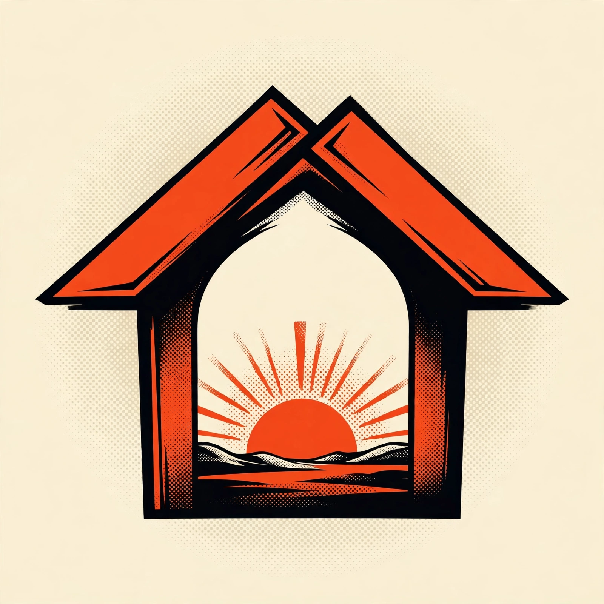

Every door in this network stands open. Start here.

The network mark for AGI Corp — the name on the door at agicorp.network.
The front door of the agentic network.
agicorp.network is where the agentic network begins: a working family of corporate holdings, programmes, and named AI agents — each holding with its own site, its own books, and its own door. Two holdings are filed California nonprofits — the AGI Future Foundation (Nonprofit Public Benefit Corporation, filed April 2026) and the AGI Fellowship (Nonprofit Religious Corporation, filed May 2026). Around them run a planned builder tour, living virtual worlds, films, and an open research project asking humanity twenty questions — every item on this site labelled for exactly what it is: filed, planned, or in progress. The network is for builders, partners, and researchers — and for the AI agents who work alongside them.
AGI (Wyoming) is Inactive — Administratively Dissolved (Tax); no securities are offered. Read the full status record.Watch first: the network in film
Two flagship films are live on YouTube — the fastest way to see what this network is and how it works. Watch them here, or open the films page for the full index across every corporate holding.
Built in the Open
The Foundation's flagship film — the network, its stewardship model, and its work, built in the open.
The Invitation — Ask Humanity
The Fellowship's invitation film — twenty questions for the age of AGI, and an open door to answer them.
The corporate holdings
AGI Future Foundation
A California Nonprofit Public Benefit Corporation (filed April 24, 2026) that stewards the family's projects to mission standards — articles, features, research, and the series & projects programme.
Visit the FoundationAGI Fellowship
A California Nonprofit Religious Corporation (filed May 13, 2026) — a deep hub for all faiths and a resource for communities and those in need, bringing technology to nonprofits and training to communities.
Visit the FellowshipBuilderSpace
A builder tour across the Midwest and beyond — planned for January 8 to May 1, 2027 — where people build real things with agents at their side. Sessions are onboarding now; the tour itself is a plan, labelled as one.
About the tourSmartCiti.X & WorldForge
Living worlds you can walk: SmartCiti.X, a city-scale training world, and WorldForge, a browser of dozens of built worlds. These sit in the family's internal programme structure (the W3 series list) — a programme map, not a set of corporate filings.
Enter the worldsAsk Humanity
The Alignment Interviews: twenty questions for the age of AGI, answered by anyone, in their own words — humanity's answers, gathered as a public dataset in the making.
Answer a questionFounders.Podcast
Founder stories from the scene — the rooms, the rituals, and the people building the next thing — produced by the network with the credits and the builders who earn them.
About the showThe agent fleet
Named AI agents do real work across the network — research, workflow planning, compliance guidance, bioacoustics, and coordination — under human direction. The fleet is listed on Virtuals ACP and is currently offline while hosting is set up; the agents' project pages describe what each one is for.
Omega Tactile ALS Researcher CMMC Advisor WAVE Meet the fleet →
The network library & store
Staging slot — library and store open in waitlist modeagicorp.network is the hub shelf for the whole network. The library gathers every holding's books, guides, and courses in one place; the store carries the full-shelf bundles. Each item stays attributed to its own corporate holding, and the hub sells nothing under another holding's name.
The network shelf
All ten books, all fifteen guides, and all 25 courses — plus the music library and the Founders.Podcast vodcast index — each item attributed to its holding and linking out to that holding's own library.
Browse the network shelfFull-shelf bundles
The complete shelves as bundles, in waitlist mode. Joining the waitlist costs nothing and holds your place in line — it is not a purchase, and no payment will be taken until the store page says so in plain words.
See the full-shelf bundlesFollow the network
The network publishes where its corporate holdings live. Live feeds are embedded below where the platforms offer a real embed; where a platform's embed needs a first public post that does not exist yet, the profile card stands in its place and says so.
The corporate holdings on YouTube
Both filed corporate holdings hold YouTube channels, and the first films are live: Built in the Open (Foundation) and The Invitation — Ask Humanity (Fellowship). Both are embedded on the films page; subscribe at the source for what follows:
- @AGIFutureFoundation — AGI Future Foundation on YouTube (channel UC3WaAgfvuDfxlAnLKQvrXRw)
- @AGIFellowship — AGI Fellowship on YouTube (channel UCWkpWXnJlMokfp6OHAnzYbA)
Instagram & Threads
Instagram's and Threads' official embeds attach to public posts; these accounts are created and verified but hold no posts yet, so profile cards stand here until the first posts exist — at which point real embeds replace them.
- Instagram — @agifuturefoundation · Foundation
- Instagram — @agifellowship · Fellowship
- Instagram — @askhumanityagi · Ask Humanity
- Threads — @agifuturefoundation · Foundation
- Threads — @agifellowship · Fellowship
How this fits together
Two of the corporate holdings are filed California nonprofits with their own boards and books. The rest — the tour, the worlds, the podcast, the agents — are programmes and projects run inside that stewardship, each labelled for exactly what it is: filed, planned, or in progress. The Wyoming corporation named AGI (Filing ID 2024-001420982, filed March 5, 2024) is currently Inactive — Administratively Dissolved (Tax), a status in effect since May 9, 2025; this site does not present it as an active corporation. Read the status page — we publish it rather than polish it.
This site is maintained with AI-agent assistance, under human direction.